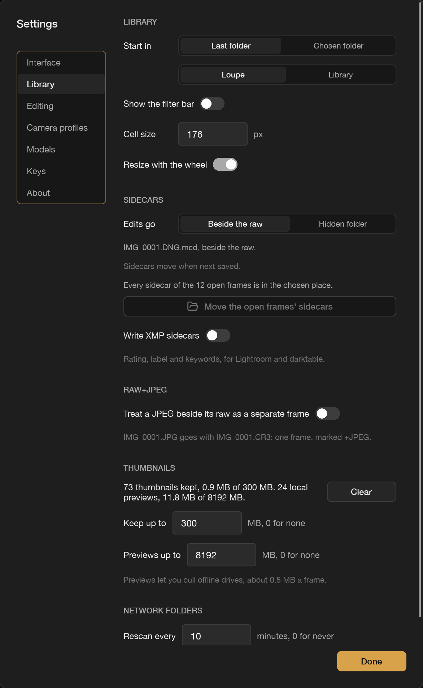
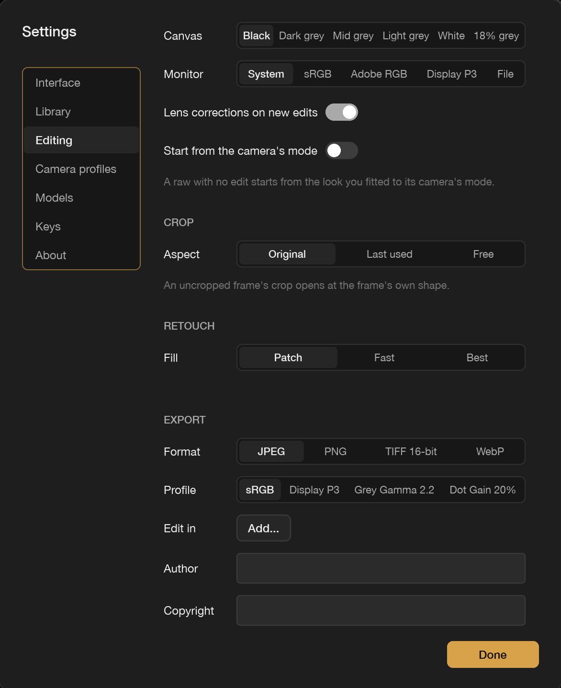
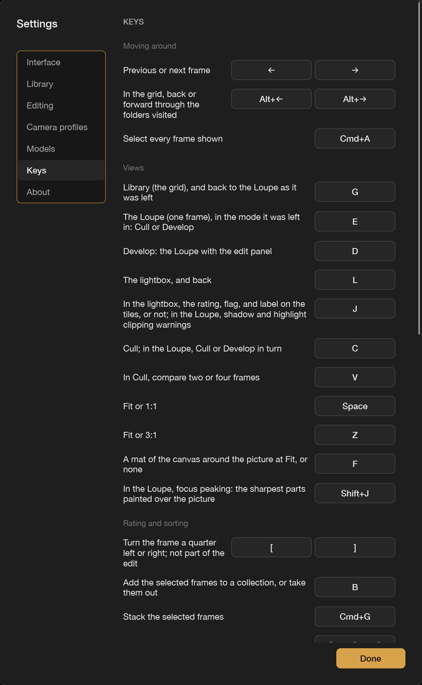
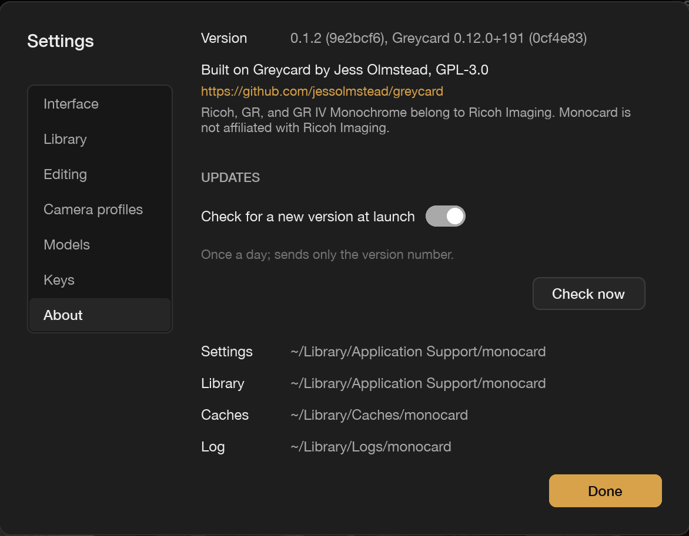

Settings
The Settings sheet has seven pages. Click Settings... at the bottom of the left pane, or press Ctrl+,. A change is in effect at once, unless this chapter says that it needs a new start. To close the sheet, click Done or press Esc. On a Mac, use Cmd where this guide says Ctrl.
Pages
Interface
| Row | What it does |
|---|---|
| Scale | The size of the window's text and controls, from 50 to 300%. It needs a new start |
| Theme | Charcoal, Grey, or Light |
| Scroll bars | Fade or Stay |
| Scroll bar size | Thin, Medium, or Wide |
| Language | The language of the window. It needs a new start. The text that Monocard adds to Greycard is in English only |
| One section open at a time | Closes the other sections when you open one |
| Reset section order | Puts the panels back in their first order |
Library


| Row | What it does |
|---|---|
| Start in | The folder to open at the start: the last one, or one that you choose |
| Show the filter bar | Shows the filter bar |
| Cell size | The size of the pictures in the grid, from 96 to 512 |
| Resize with the wheel | Lets the wheel change the size of the pictures |
| Open the camera window when a camera is connected | macOS only. See The camera window |
| Edits go | Beside the raw, or to a Hidden folder named .monocard |
| Move the open frames' sidecars | Moves the edits of the photos on screen to that place now. Other edits move when you save them next |
| Write XMP sidecars | Also writes .xmp files for other programs. Flags are not in them |
| Treat a JPEG beside its raw as a separate frame | Lists the JPEG of a raw by itself |
| THUMBNAILS | The disk space for thumbnails and previews. Clear deletes the thumbnails |
| NETWORK FOLDERS | How often to look for changes in network folders, in minutes. 0 is never |
Editing


| Row | What it does |
|---|---|
| Canvas | The color around the photo: Black, Dark grey, Mid grey, Light grey, White, or 18% grey. It is 18% grey at first |
| Monitor | The color space of your screen: System, sRGB, Adobe RGB, Display P3, or a profile File |
| Lens corrections on new edits | On at first |
| Start from the camera's mode | A raw with no edit starts from the look that you fitted to its camera's mode. Off at first. See Looks |
| Hide color photos | Leaves color photos out of the library. Off at first: Monocard shows them in grey. It takes effect the next time Monocard starts. See Color photos |
| CROP, Aspect | The aspect of a new crop: Original, Last used, or Free |
| RETOUCH, Fill | Patch, Fast, or Best. See Fill |
| EXPORT, Format | JPEG, PNG, TIFF 16-bit, or WebP |
| EXPORT, Profile | sRGB, Display P3, Grey Gamma 2.2, or Dot Gain 20% |
| Edit in | The programs for Edit in. Add... adds one |
| Author, Copyright | Text to write in exported files |
Camera profiles
This page has the looks that you fitted to your camera's picture modes. See Looks.
| Part | What it has |
|---|---|
| CAMERA MODES | One row for each mode, with its state, error, number of photos, and date. You can use, adjust, export, delete, or fit it |
| OTHER VALUES | Measure sensor noise... |
| PHOTOS FOR THE FIT | The folders to read. Add folder..., Remove from list, and Fit all |
| TEST CHART | Save chart... saves the chart to photograph |
Models
This page lists the models that Monocard can download, such as those for masks and Fill. Each row shows the use, the license, the size, and the status. Download all shows the size of all of them. You do not need them all: the develop of a monochrome photo does not use the denoise models.
Keys
This page lists the keys that you can change. Click a key and press the new one. Esc keeps the old one. Delete or Backspace sets it to none. Reset to defaults puts all keys back.


About
This page shows the version of Monocard, the version of Greycard that it is built on, and the credits.


| Row | What it does |
|---|---|
| Check for a new version at launch | Asks GitHub for the latest version, once a day. It sends only the version number. It is on at first |
| Check now | Asks now |
| Settings, Library, Caches, Log | The folders that Monocard uses. Click one to open it |
When there is a new version, a button above Settings... says that it is available. The button opens the page of the release in your browser. Monocard does not download or install it. Not now hides the button.
Files
| Files | macOS |
|---|---|
| Settings, library, collections, presets, looks, camera profiles | ~/Library/Application Support/monocard |
| Thumbnails, previews, masks, models, lens database | ~/Library/Caches/monocard |
| Log | ~/Library/Logs/monocard |
| Files | Linux |
|---|---|
| Settings, presets, looks, camera profiles | ~/.config/monocard |
| Library, collections | ~/.local/share/monocard |
| Thumbnails, previews, masks, models, lens database | ~/.cache/monocard |
| Log | ~/.local/state/monocard |
| Files | Windows |
|---|---|
| Settings, presets, looks, camera profiles | %APPDATA%\monocard |
| Library, collections, thumbnails, previews, masks, models, lens database | %LOCALAPPDATA%\monocard |
| Log | %LOCALAPPDATA%\monocard\logs |
In the settings folder, settings.json holds the settings, presets the presets, looks-mono the looks, recipes the recipes, and cameras the camera profiles. In the library folder, library.sqlite holds the index of your photos.
Your edits are not in these folders. They are in .mcd files with your photos. See Where your edits are kept.
To get back disk space, quit Monocard and delete thumbs, models, masks, denoise, or lensfun in the folder of the thumbnails. Monocard makes or downloads them again when it needs them.
If settings.json cannot be read, Monocard starts with the default settings and keeps the old file as settings.json.bad.